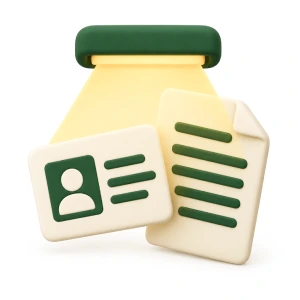
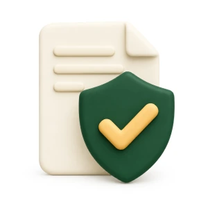

Baca dokumen otomatis
Data dari KTP, sertifikat, dan dokumen klien dibaca AI, lalu diisikan ke draft akta.
WEBINAR ONLINE · 5 DESEMBER 2026
Lihat langsung cara AI Aktaklik membaca dokumen klien, mengisi template akta kantor Anda, lalu menyiapkan draft untuk Anda review.
Gratis. Satu form bisa untuk Anda dan tim kantor.

YANG AKAN DIBAHAS
Satu sesi praktis untuk kantor notaris yang ingin pekerjaan drafting terasa lebih ringkas.

Data dari KTP, sertifikat, dan dokumen klien dibaca AI, lalu diisikan ke draft akta.
Lihat alurnya dari upload berkas sampai draft Word atau PDF yang siap direview.

Hasil tetap Anda periksa sebelum dipakai. Data klien tidak diperjualbelikan.
CARA IKUT
Nama, nomor WhatsApp, dan email yang aktif.
Nama dan kota kantor, serta siapa saja yang akan hadir.
Link webinar dikirim ke WhatsApp dan email. Mulai 11.00 WIB.
Sabtu, 5 Desember 2026, pukul 11.00 WIB, online. Daftarkan beberapa peserta sekaligus dalam satu form.